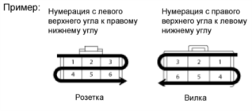

Верхняя часть экрана зарезервирована для меню системы электросхем на базе Web-интерфейса.
Для получения доступа к необходимым данным следует выбрать один из разделов меню.
На первом экране данной системы электросхем отображается верхнее меню раздела "Цепи системы".
| Разделы | Название | Содержание |
|---|---|---|
| Расположение |
Указывается местоположение ЭБУ, реле, блоков реле и пр. Указывается местоположение разъемов, точек соединения с массой и пр. |
|
| Электросхемы | Цепи электропитания | Указываются цепи электропитания |
| Цепи системы | Выводится электросхема для каждой системы. | |
| Точки соединения с массой | Отображаются точки соединения с массой. | |
| Общая электросхема | Выводятся общие электросхемы автомобиля. | |
| Таблица/список | Список разъемов | Обеспечивает доступ к списку наименований всех разъемов. Этот список позволяет просматривать каталожные номера, сведения о форме, а также некоторые другие необходимые данные. |
| Цепи электропитания | Указываются цепи электропитания (матричная таблица) | |
| Введение | В данную систему электросхем включены разделы "Введение", "Поиск неисправностей", "Сокращения", "Глоссарий терминов и символов" и "Справка". |
Выберите необходимый пункт из просматриваемого списка [A].
Если на схеме "Проводные соединения и цепи системы" имеются обозначения разъемов, в левой верхней части экрана отображается список наименований деталей.
Слева от наименования детали указывается код детали.
После выбора детали из списка наименований в [A] здесь отображаются подробные данные о разъеме.
Нажмите на эту ссылку, чтобы перейти к данным по жгутам проводов для ремонта.
УКАЗАНИЕ: Эта ссылка отображается, только если доступны данные по жгутам проводов для ремонта.
На экране "Цепи системы" имеется ссылка, которая позволяет перейти к разделу, в котором указывается местоположение разъема, отображаемого над этой ссылкой.
На экране "Проводные соединения системы" имеется ссылка на экран "Цепи системы", где отображается проводное соединение разъема, показанного в данной рамке.
После нажатия на эту кнопку отображаемая в текущий момент система или проводное соединение преобразуется в печатный формат (PDF).
Результат может быть напечатан с помощью кнопки "печать" в Acrobat Reader (внешняя программа).
Здесь перечисляются наименования деталей.
Выводятся следующие данные: изображение, код, каталожный номер и цвет разъема, выбранного из списка наименований.
Нажмите на эту ссылку, чтобы перейти к данным по жгутам проводов для ремонта.
УКАЗАНИЕ: Эта ссылка отображается, только если доступны данные по жгутам проводов для ремонта.
Эта ссылка обеспечивает доступ к электросхеме, относящейся к выбранному разъему.
Эта ссылка обеспечивает доступ к цепям системы, относящейся к выбранному разъему.
Эта кнопка обеспечивает доступ к информации о выбранном распределительном блоке (J/B), блоке реле (R/B).
После нажатия на эту ссылку отображается информация о цепях выбранной системы.
Изменяется порядок отображения данных о предохранителях.

Медные провода
B = черный W = белый BR = коричневый L = синий V = фиолетовый SB = голубой R = красный G = зеленый LG = светло-зеленый P = розовый Y = желтый GR = серый O = оранжевый BE = бежевый DG=темно-серый
Алюминиевые провода
LA=лавандовый
Первая буква обозначает основной цвет провода, а вторая – цвет полоски.
Обозначает разъем, соединенный с замыкающим контактом.
В данном руководстве разъем распределительного блока включает замыкающий контакт, соединенный с несколькими жгутами проводов. При выполнении проверки замыкающий контакт должен быть установлен. |
Каждый жгут проводов имеет свой код. Коды жгутов проводов входят в коды деталей, коды разъемов, соединяющих жгуты проводов, и коды точек соединения с массой. Например, обозначения E31 (переключатель системы помощи при спуске по склону), AE4 (вилка разъема, соединяющего жгуты проводов) и E3 (точка соединения с массой) указывают на то, что соответствующие детали относятся к одному и тому же жгуту проводов "E".
* |
Информация в данном руководстве касается жгутов проводов.
|